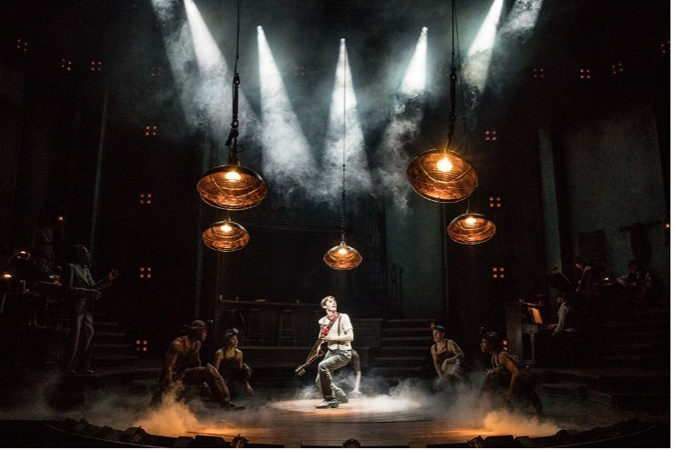
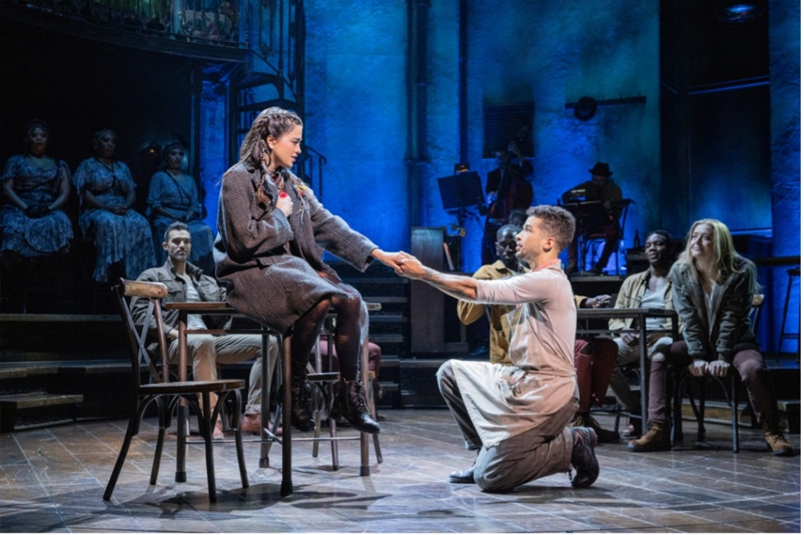
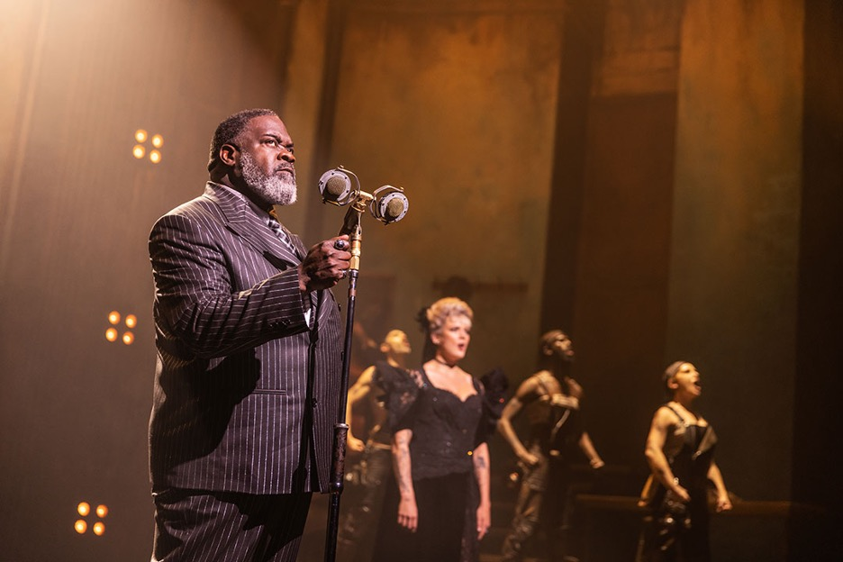
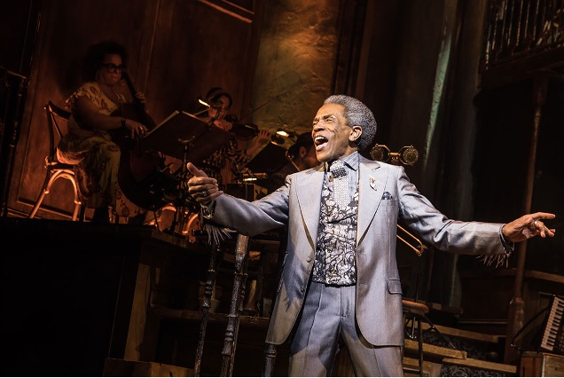

Characters

ORPHEUS
Orpheus is a hopeful musician who believes his songs can change the world. His love for Eurydice drives him to travel into the underworld to rescue her from Hades. [cite: 28, 29]

EURYDICE
Eurydice is practical and independent. She struggles to survive in a difficult world and is tempted by the promise of safety offered by Hades in the underground city of Hadestown. [cite: 31]

HADES
Hades rules the industrial underworld known as Hadestown. He is powerful and controlling but also deeply lonely, especially in his strained relationship with Persephone. [cite: 33]
PERSEPHONE
Persephone is the queen of the underworld and goddess of spring. She moves between the world above and Hadestown, bringing warmth, life, and rebellion against Hades' strict control. [cite: 35]

HERMES
Hermes acts as the narrator of the story, guiding the audience through the tale and helping Orpheus on his journey to the underworld. [cite: 37]